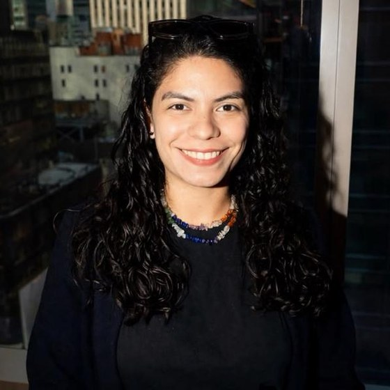

Product & Project Manager · Brooklyn, NY · English / Español
Industrial engineer by training, product and project manager by practice. I make teams faster, processes leaner and technical ideas easy to say yes to.

{{ s.kind }}
{{ s.name }}
The app I helped develop simulates the whole brewing process, from raw material to final product, so the slowest step shows up before it costs real time and waste. Monitoring KPIs cut waste by around 94%.
{{ t.n }}
{{ t.label }}
Core strength
Working with teams from many different cultures built my understanding of people and how to adapt the way I communicate. I explain technical information to non-technical audiences and resolve problems that involve stakeholders.
{{ p.text }}
{{ p.result }}
AI in practice
For the last few years I have used AI as a working tool to reduce the time projects take and to optimize how they run. I design my own prompts and build things from there.
{{ a.text }}
{{ g.group }}
{{ e.org }}
{{ e.text }}
Touro University
EAM University Institute